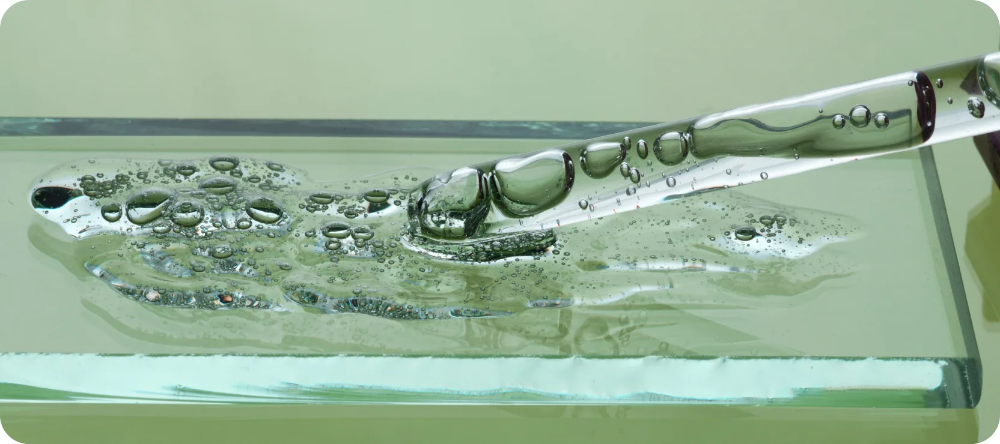
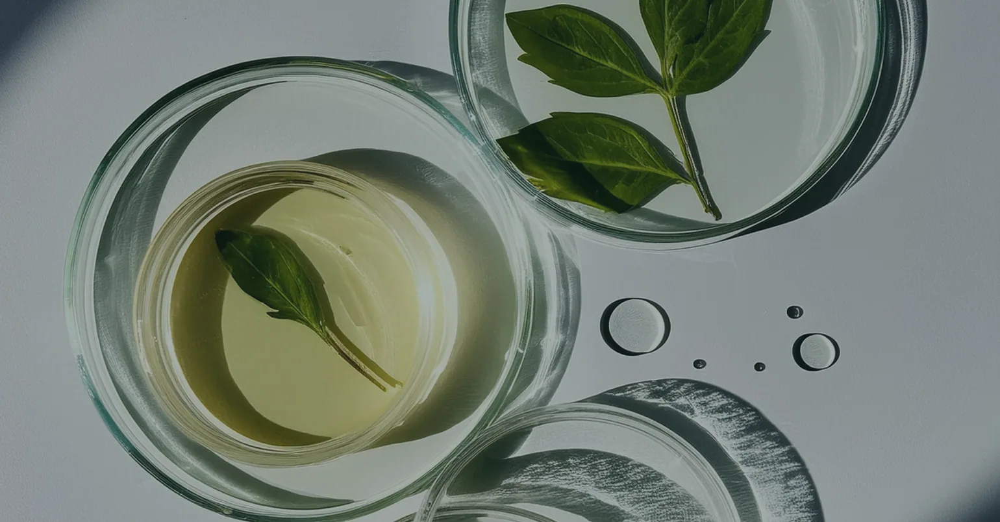
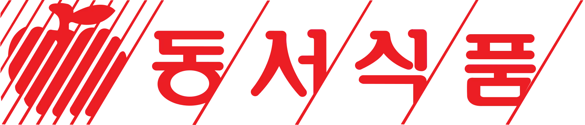

친환경은 선택이 아닌 필수다.
유기 합성을 바이오 합성으로 전환.
그린 케미스트리를 사업 혁신의 축으로.
Bio Ingredient Research & Technology
세계가 먼저 찾는 한국의 원료 기업
2002
FOUNDED
창사 이후 단 한 번도 적자 없음
70%
EXPORT RATIO
매출 대부분이 해외에서 발생
35+
PATENTS
독자 기술 기반 등록 특허
30%
R&D RATIO
전체 인력 중 연구인력 비중
유기 합성을 바이오 합성으로 전환.
그린 케미스트리를 사업 혁신의 축으로.

국내 고유 자생식물 및 해외 다양한 열대식물 등으로부터 추출
Ingredient Solution
Technology Overiew

02Research Resources
Global Partnership

EcoVadis ESG GOLD · ISO 9001 · ISO 14001 · EFfCI GMP · FSSC 22000
Macrocare On Youtube
Our Credentials